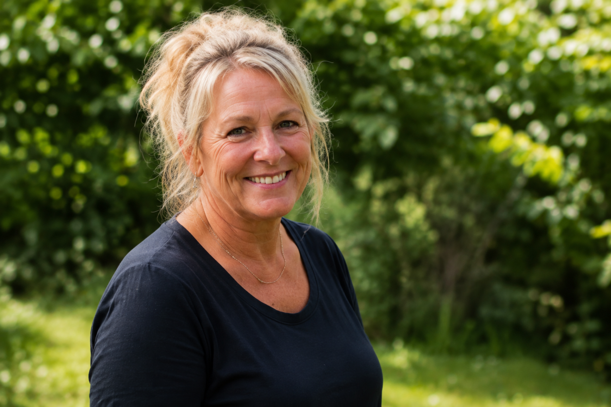
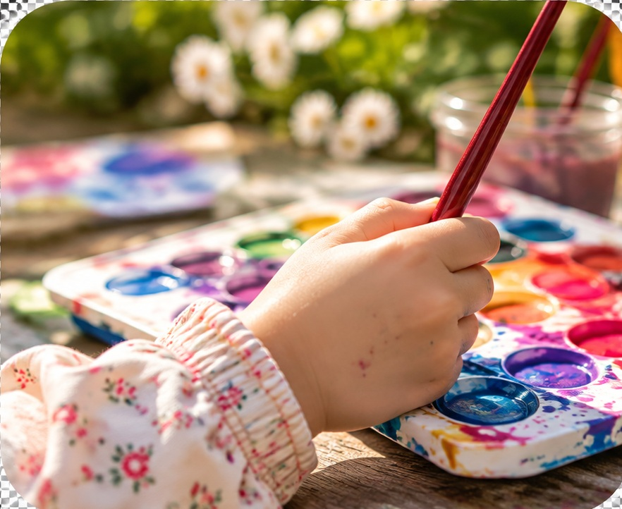

Om mig
Lær mig bedre at kende, og få et indblik i hverdagen hos Krudt, Kram og Krea.

♥ Mød Tina
Hej! Jeg hedder Tina, og jeg står bag Krudt, Kram og Krea.
Jeg brænder for at skabe en tryg, kærlig og nærværende hverdag, hvor børnene har mulighed for at udvikle sig gennem leg, kreativitet og fællesskab.
Hos mig er der plads til både store oplevelser og små øjeblikke.
Kontakt mig →
🌞 Et hjem med plads til leg
Hos Krudt, Kram og Krea skal børnene føle sig hjemme fra første dag.
Jeg lægger vægt på trygge omgivelser, hvor børnene kan udforske, lege og udvikle sig i deres eget tempo.
Vi bruger både hjemmet og naturen omkring os til spændende oplevelser.
Se en typisk dag →♥ Krudt, kram og kreativitet
Kreativitet og leg er en vigtig del af hverdagen hos mig.
Børnene får mulighed for at male, tegne, bygge og bruge fantasien. Vi arbejder med aktiviteter, der stimulerer både sanser og motorik.
Samtidig er der altid tid til omsorg, nærvær og et godt kram.
Praktisk information →


🌿 Min tilgang til børnene
For mig er tryghed og nærvær grundlaget for en god hverdag.
Jeg møder hvert barn med omsorg, respekt og forståelse for dets individuelle behov.
Mit mål er at skabe et sted, hvor alle børn føler sig set, hørt og værdsat.